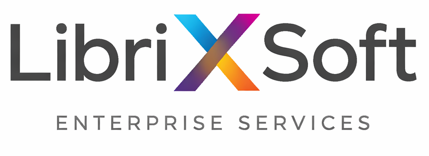

Este documento detalla la configuración técnica y operativa optimizada para el entorno local de LLM, utilizando el modelo Gemma 4 para alta velocidad. El flujo completo cubre: compilación del motor de inferencia, descarga del modelo, arranque del servidor y configuración de OpenClaw. Este documento ha sido generado y diseñado utilizando Gemma 4, un modelo de lenguaje avanzado. El contenido técnico y la estructura del template reflejan las capacidades actuales de esta IA.
Objetivo: Conectar el agente OpenClaw con un LLM compilado y ejecutado localmente para obtener tokens ilimitados, sin depender de APIs externas de pago ni de los límites de contexto que estas imponen. OpenClaw es una herramienta poderosa pero con alto consumo de tokens —especialmente al manejar agentes, subagentes y contexto extendido— por lo que integrarlo con un modelo local elimina ese costo y cualquier restricción de contexto por completo.
Hardware utilizado: Esta prueba se realizó en una Alienware x16 R2 con 32 GB de RAM. Es importante aclarar que la velocidad de inferencia no depende del modelo en sí: todo depende de la VRAM y los recursos disponibles de la máquina. Un modelo puede parecer lento no por limitaciones del LLM sino por falta de memoria de video para cargar capas en GPU, forzando el cómputo a CPU, que es significativamente más lento.
Llama.cpp es el motor de inferencia local que permite ejecutar modelos en formato GGUF directamente sobre CPU/GPU sin dependencias externas. El primer paso es obtener el código fuente clonando el repositorio oficial desde GitHub:
git clone https://github.com/ggerganov/llama.cpp
cd llama.cpp
Esto descarga todos los archivos fuente dentro del directorio
llama.cpp/ y te posiciona dentro de él, listo para
compilar.
La compilación genera los ejecutables necesarios, entre ellos
llama-server, que es el servidor HTTP de inferencia. Se
utiliza CMake como sistema de build y
Make para ejecutar la compilación:
cmake -B build
cmake --build build --config Release -j 8Descripción de los flags:
-B build — Indica a CMake que genere los archivos
de compilación en el subdirectorio build/,
manteniendo el árbol fuente limpio.
--config Release — Compila en modo Release
(optimizaciones activadas, sin símbolos de debug), lo que mejora
significativamente la velocidad de inferencia.
-j 8 — Corre 8 jobs de compilación en paralelo.
Ajusta este número según los núcleos de tu CPU; en la Alienware
x16 R2 con su CPU de alto rendimiento puedes subir a
-j 16 o más. En Linux/macOS puedes usar
-j$(nproc) para detectar automáticamente el total
de núcleos.
-DGGML_CUDA=ON al primer comando CMake, lo que permite
offloading de capas al GPU y mejora drásticamente la velocidad de
inferencia.
Una vez finalizada la compilación, los binarios quedarán disponibles
en build/bin/. Regresa al directorio raíz del proyecto
antes de continuar:
cd ..
El modelo se obtiene desde Hugging Face utilizando la CLI oficial.
Asegúrate de tener instalado el paquete
huggingface_hub y haber iniciado sesión con tu token si
el modelo requiere aceptación de licencia:
pip install huggingface_hub
huggingface-cli login # Solo si el modelo es privado o requiere aceptar términosLuego descarga el modelo a la carpeta local de modelos del proyecto:
huggingface-cli download google/gemma-4-E4B-it \
--local-dir ./llama.cpp/models/gemma-4-E4B-it
El flag --local-dir indica la ruta de destino donde se
guardarán todos los archivos del modelo (pesos, tokenizer,
configuración). Al descargarlo directamente dentro de la carpeta
models/ de llama.cpp, el servidor lo encontrará sin
necesidad de rutas absolutas.
Una vez compilado llama.cpp y descargado el modelo, se levanta el
servidor HTTP de inferencia con el siguiente comando desde el
directorio llama.cpp/:
./build/bin/llama-server \
-m models/gemma-4-E4B-it \
-c 65536 \
--port 1234 \
-t 8 \
--host 0.0.0.0Descripción detallada de cada parámetro:
-m models/gemma-4-E4B-it — Ruta al directorio del
modelo descargado. Llama.cpp detecta automáticamente el archivo
GGUF principal dentro de la carpeta.
-c 65536 —
Tamaño de la ventana de contexto en tokens. El
modelo Gemma 4 soporta hasta
131,072 tokens (131K) como máximo; sin embargo,
en esta prueba se utilizó 65536 (64K) como valor de
trabajo estable dado el límite de 32 GB de RAM de la Alienware
x16 R2. Cargar el contexto máximo de 131K requiere
significativamente más memoria; ajusta este valor según los
recursos disponibles de tu servidor.
--port 1234 — Puerto en el que el servidor escucha
las peticiones HTTP. El config.json de OpenClaw apunta a este
puerto en el Remote Server.
-t 8 — Número de hilos de CPU asignados para la
inferencia. Ajusta este valor según los núcleos físicos
disponibles en el servidor. Un valor muy alto puede causar
contención; generalmente núcleos_físicos - 2 es un buen punto de
partida.
--host 0.0.0.0 — Hace que el servidor escuche en
todas las interfaces de red, permitiendo que otros equipos de la
LAN (como la máquina cliente que corre OpenClaw) accedan al
Remote Server en el puerto 1234.
Cuando el servidor esté listo, verás en la terminal un mensaje
similar a:
llama server listening at http://0.0.0.0:1234. Desde
ese momento el endpoint /v1/chat/completions estará
disponible en la red local.
tmux o screen para que persista si
se cierra la terminal SSH. Ejemplo:
tmux new -s llm-server y luego ejecuta el comando
dentro de esa sesión.
Esta configuración garantiza que OpenClaw use exclusivamente los recursos locales del Remote Server, desactivando cualquier salida a la nube y estableciendo el contexto en 64K. A continuación se describe cada sección relevante:
Ubicación del archivo config.json según sistema operativo:
/Users/tu-usuario/.openclaw/config.json
/home/tu-usuario/.openclaw/config.json
C:\Users\tu-usuario\.openclaw\config.json
Si el directorio .openclaw no existe, créalo
manualmente y coloca el archivo config.json dentro.
OpenClaw lo detectará automáticamente al arrancar.
"api": "openai-responses"), apuntando al Remote Server en el puerto 1234. La
apiKey es un valor local ficticio requerido por el
cliente pero ignorado por llama.cpp.
-c usado al lanzar el servidor. Para Gemma 4
se declara 131072 (capacidad máxima del modelo),
aunque el servidor se inicia con 65536 por limitación de RAM.
Para Llama 3 se usa 16384.
custom-llama/google/gemma-4-e4b como modelo
principal de todos los agentes, sin fallbacks a la nube.
18790 en modo LAN, protegido por token Bearer. El
allowedOrigins lista las URLs autorizadas para el
panel de control web.
{
"meta": {
"lastTouchedVersion": "2026.4.15",
"lastTouchedAt": "2026-04-18T08:44:06.575Z"
},
"wizard": {
"lastRunAt": "2026-04-16T01:40:30.108Z",
"lastRunVersion": "2026.4.12",
"lastRunCommand": "onboard",
"lastRunMode": "local"
},
"auth": {
"profiles": {}
},
"models": {
"mode": "merge",
"providers": {
"custom-llama": {
"api": "openai-responses",
"baseUrl": "http://10.0.0.25:1234/v1",
"apiKey": "sk-l*[REDACTED]",
"models": [
{
"id": "google/gemma-4-e4b",
"name": "Gemma 4 Local",
"contextWindow": 131072
},
{
"id": "llama-3-8b-instruct.Q4_K_M.gguf",
"name": "Llama 3 Local",
"contextWindow": 16384
}
]
}
}
},
"agents": {
"defaults": {
"model": {
"primary": "custom-llama/google/gemma-4-e4b",
"fallbacks": []
},
"models": {
"custom-llama/google/gemma-4-e4b": {
"alias": "gemma-local"
},
"custom-llama/llama-3-8b-instruct.Q4_K_M.gguf": {
"alias": "llama-local"
}
},
"workspace": "/Users/lastprophet/.openclaw/workspace",
"compaction": {
"mode": "safeguard"
},
"maxConcurrent": 1,
"subagents": {
"maxConcurrent": 2
}
}
},
"messages": {
"ackReactionScope": "group-mentions"
},
"commands": {
"native": "auto",
"nativeSkills": "auto",
"restart": true,
"ownerDisplay": "raw"
},
"hooks": {
"internal": {
"enabled": true,
"entries": {
"self-improvement": {
"enabled": true
}
}
}
},
"channels": {
"telegram": {
"enabled": false,
"dmPolicy": "pairing",
"bot\"Token": "YOUR*[REDACTED]",
"groupPolicy": "disabled",
"streaming": {
"mode": "partial"
}
},
"gateway": {
"port": 18790,
"mode": "local",
"auth": {
"mode": "token",
"\"token\": \"5f17*[REDACTED]\""
},
"remote": {
"\"token\": \"5f17*[REDACTED]\""
},
"bind": "lan",
"tailscale": {
"mode": "off",
"resetOnExit": false
},
"controlUi": {
"allowInsecureAuth": true,
"allowedOrigins": [
"http://localhost:18790",
"http://127.0.0.1:18790",
"http://10.0.0.25:18790"
]
}
}
},
"plugins": {
"entries": {
"openai": { "enabled": false },
"google": { "enabled": false }
}
},
"session": {
"dmScope": "per-channel-peer"
},
"tools": {
"profile": "coding"
},
"secrets": {
"providers": {}
}
}
Con el servidor de inferencia corriendo en el Remote Server y el
config.json listo, el último paso es arrancar OpenClaw
apuntando a esa configuración. OpenClaw lee su configuración desde
el directorio ~/.openclaw/ por defecto.
1. Verificar que el Remote Server responde antes de arrancar OpenClaw:
curl http://127.0.0.1:1234/v1/modelsDeberías ver un JSON con la lista de modelos cargados. Si hay error de conexión, revisa que el servidor esté corriendo y que el firewall permita el puerto 1234 desde la red local.
2. Iniciar OpenClaw:
openclaw gateway
OpenClaw leerá el config.json, registrará el proveedor
custom-llama y establecerá
gemma-local como modelo activo. En el log de arranque
deberías ver algo como:
[INFO] Provider registered: custom-llama → http://10.0.0.25:1234/v1
[INFO] Default agent model: custom-llama/google/gemma-4-e4b (gemma-local)
[INFO] Gateway listening on :18790 (LAN)3. Acceder al panel de control web:
Abre en el navegador la siguiente URL desde cualquier equipo en la red local:
http://127.0.0.1:18790
Ingresa el token de autenticación definido en el
config.json cuando se solicite. Desde el panel podrás
gestionar agentes, lanzar tareas y monitorear el uso del contexto en
tiempo real.
custom-llama y el status del servidor debe aparecer en
verde.